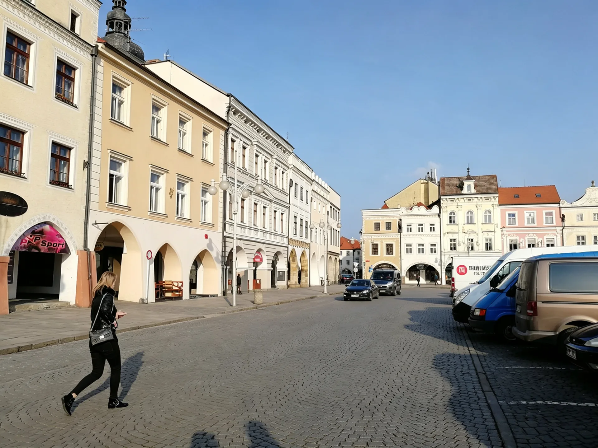
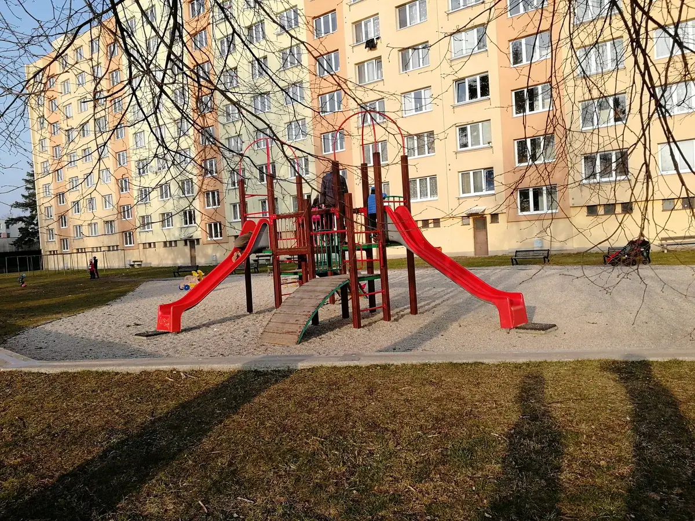
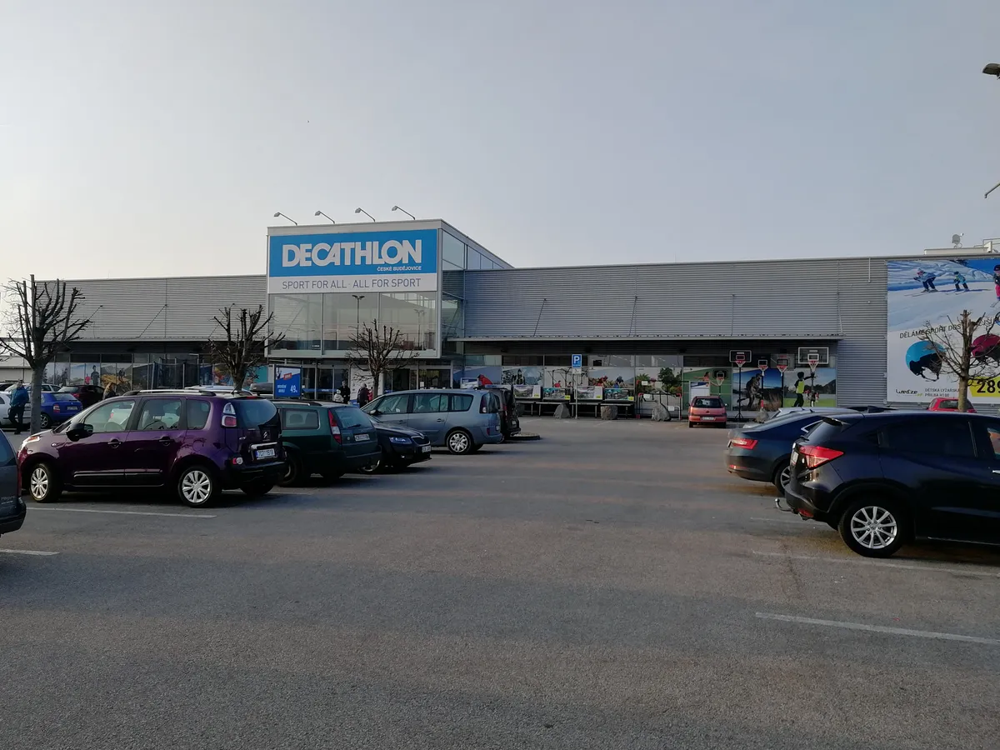
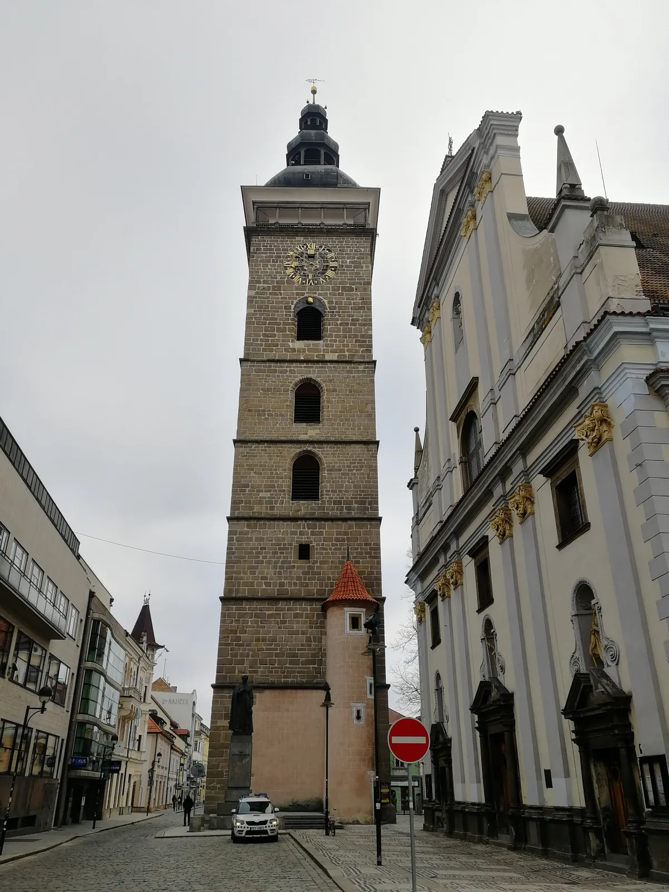
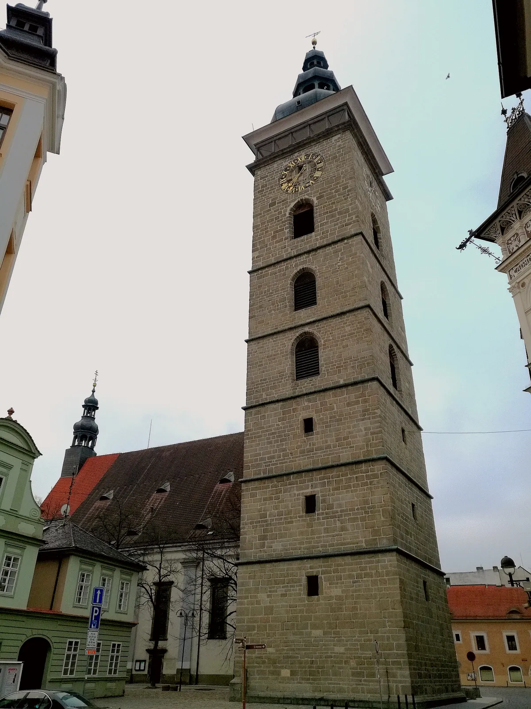

百威小镇：一座广场装下半座城，一条走去迪卡侬的路装下了捷克的三个时代
Budweiser town — a square holding half the city, a walk to Decathlon holding three Czech eras.

（2017 年 · 捷克 · 布杰约维采 / 百威小镇）
先说这座城
布杰约维采（České Budějovice），德语名 Budweis，中文常叫「百威小镇」，就是因为「百威」（Budweiser）这个名字本身就是德语里「布杰约维采」的音译。这座城 1265 年由波希米亚国王奥托卡二世规划建成，是南波希米亚最重要的皇家城市之一，从 13 世纪起就以酿造啤酒闻名——独特的水质和麦芽，让这里的啤酒后来成了全球拉格啤酒的一个标杆，也因此和大洋彼岸的美国百威啤酒公司，在「Budweiser」这个商标的归属权上纠缠了上百年。
你住的那个中心广场，是普热米斯尔·奥托卡二世广场，四边各长 133 米，是捷克全国最大的广场——整整齐齐一个正方形，四周围的都是 4 到 6 层高的中世纪建筑，巴洛克式、哥特式、文艺复兴式混杂在一起却毫不违和，底层几乎都是商店和酒吧，人行道上摆满了露天雅座。这种「一整圈建筑围出一个广场，人住在广场周围，生活也发生在广场周围」的城市结构，在中欧的老城里很常见，但布杰约维采这一个是尺度做得最大、保存最完整的样本之一。


从广场走到迪卡侬：一条路，穿过了三个时代
你说从这个广场一路走到当地的迪卡侬，这条路其实挺有意思——它大概率带你穿过了布杰约维采的三层历史：中世纪老城核心区（广场本身）、社会主义时期扩建的城市外围、以及今天全球连锁品牌落地的商业区。
路上看到的「苏式建筑」，大概率是捷克战后社会主义时期普遍建造的板式住宅楼（panelák）——这种预制板拼装式的公寓楼，是整个东欧集团在 1950 到 1980 年代为了快速解决城市住房问题而大规模复制的一种建筑形式，功能优先、几乎没有装饰，和老城广场那些精雕细琢的巴洛克立面形成了极其鲜明的对比。今天这类板楼在捷克几乎每座中型以上的城市外围都能看到，是这个国家从「哈布斯堡王朝的皇家城市」到「华约集团的社会主义国家」这段历史最直白的建筑注脚。
而路的另一头，迪卡侬本身就是一个很好的「全球化落地到毛细血管」的例子——这家法国运动零售巨头，把门店开进了这样一座人口不到 10 万的捷克地方城市，说明全球化消费品牌的渗透早已经不满足于只占领首都和一线城市，而是要下沉到每一个足够有购买力的区域中心。


斯柯达：从布拉格的「全球化叙事」，落到了这里的「日常渗透」
你提到路上看到了一些斯柯达相关的企业——大概率是斯柯达的经销商展厅或者零配件门店，这类门店在捷克几乎每个地级市都有，布杰约维采这样的区域中心城市自然也不例外。
这一点恰好能给之前布拉格那篇里讲的斯柯达故事，补上关键的另一半。布拉格讲的是斯柯达「走出去」的故事——1991 年加入大众集团，后来成为全球 90 多个国家都能买到的品牌，2010 年起中国成了它最大的单一市场。但一个品牌真正的根基，从来不只是它在海外市场跑得多远，更是它在自己国家的毛细血管里扎得多深。
一个品牌如果在自己家门口都站不稳，是没有资格去谈全球化的。
——董立鑫 海鑫汇创始人兼执行总裁，新加坡世贸秘书长兼首席运营官
写在最后
这次从广场走到迪卡侬的这段路，表面上只是一次普通的散步，但恰好把这座小城的三层身份走了个遍：皇家广场代表的中世纪商贸繁华，板式住宅楼代表的社会主义工业化历史，迪卡侬和斯柯达门店代表的今天的全球化消费图景。三层历史叠在同一座小城里，谁也没有完全取代谁——这大概也是中欧这些老城最迷人的地方：它们从不把旧的历史推倒重来，只是让新的一层，继续叠加在旧的上面。
本文整理自董立鑫（Bruce Dong）海外产业考察记录，首发于海鑫汇。